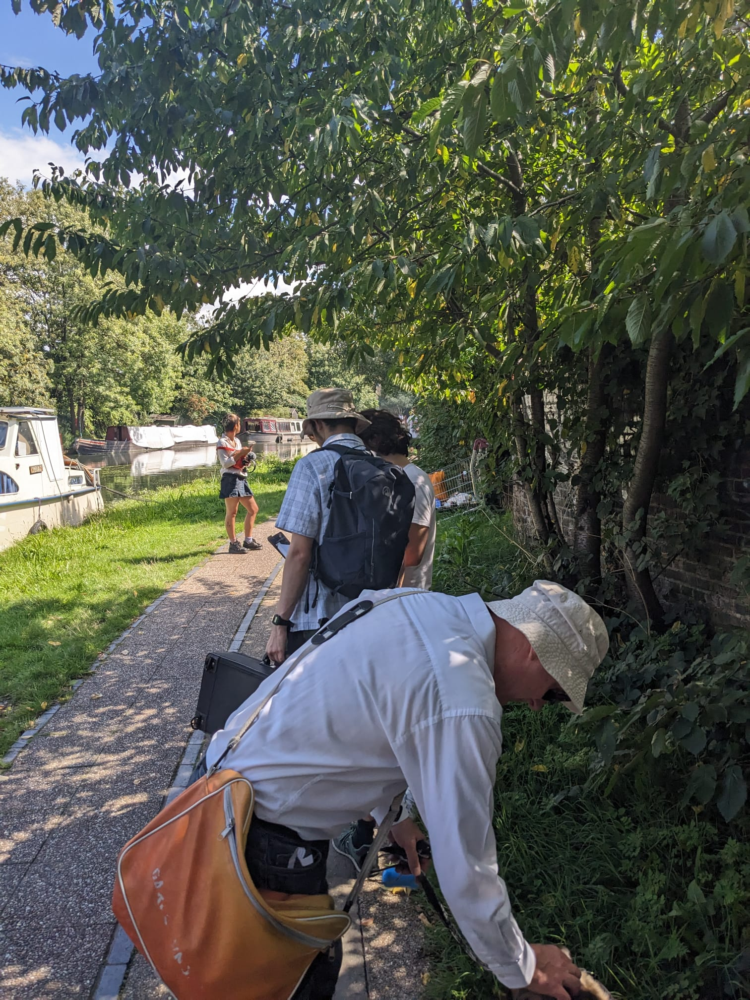
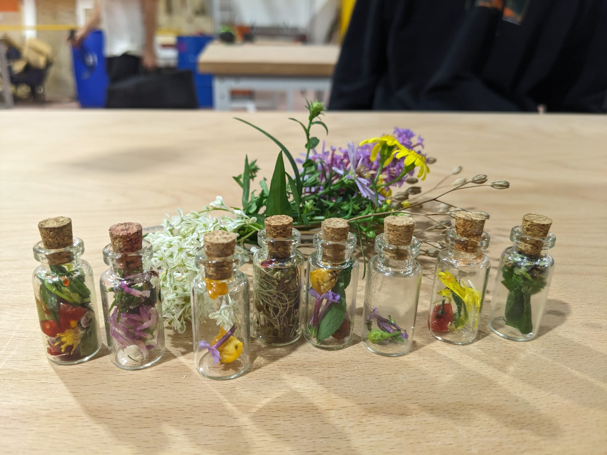
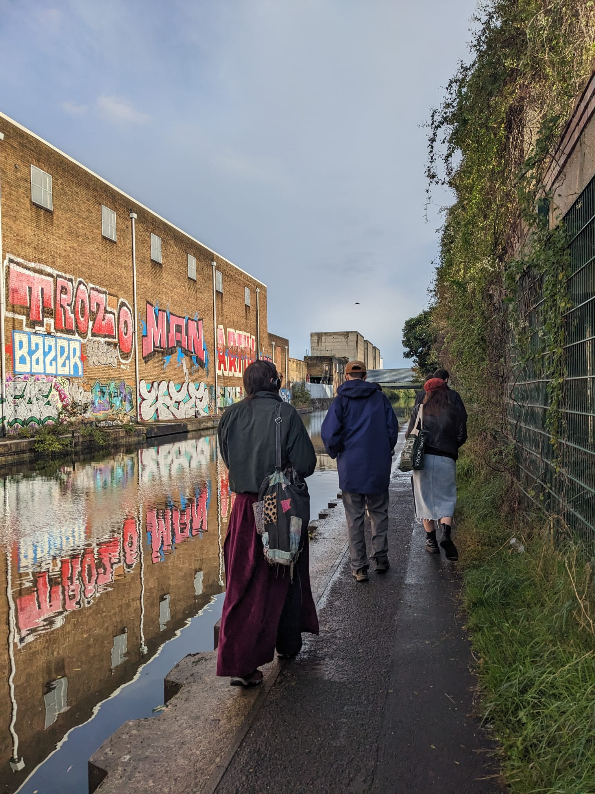
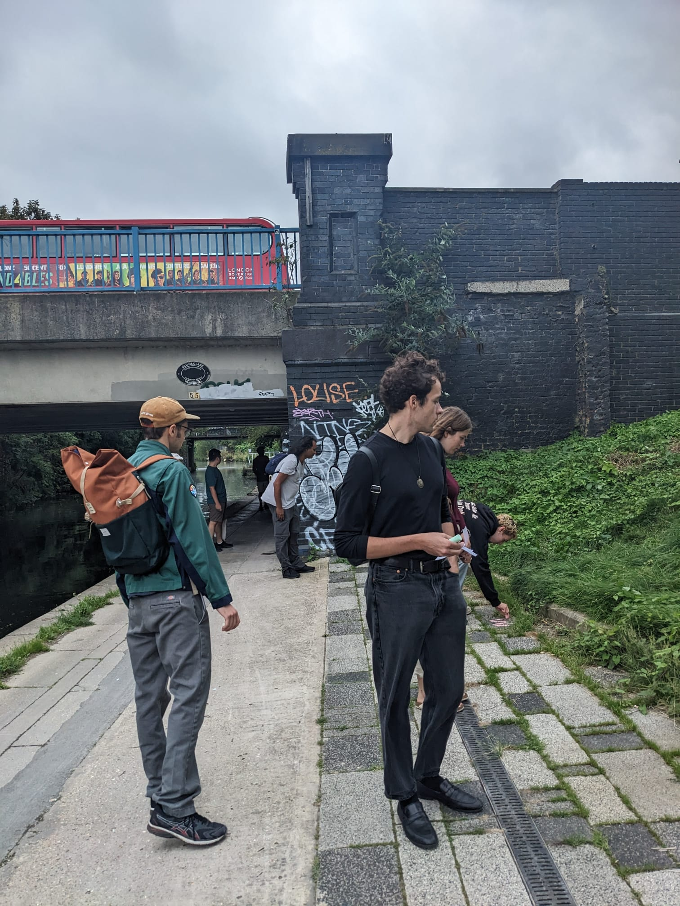
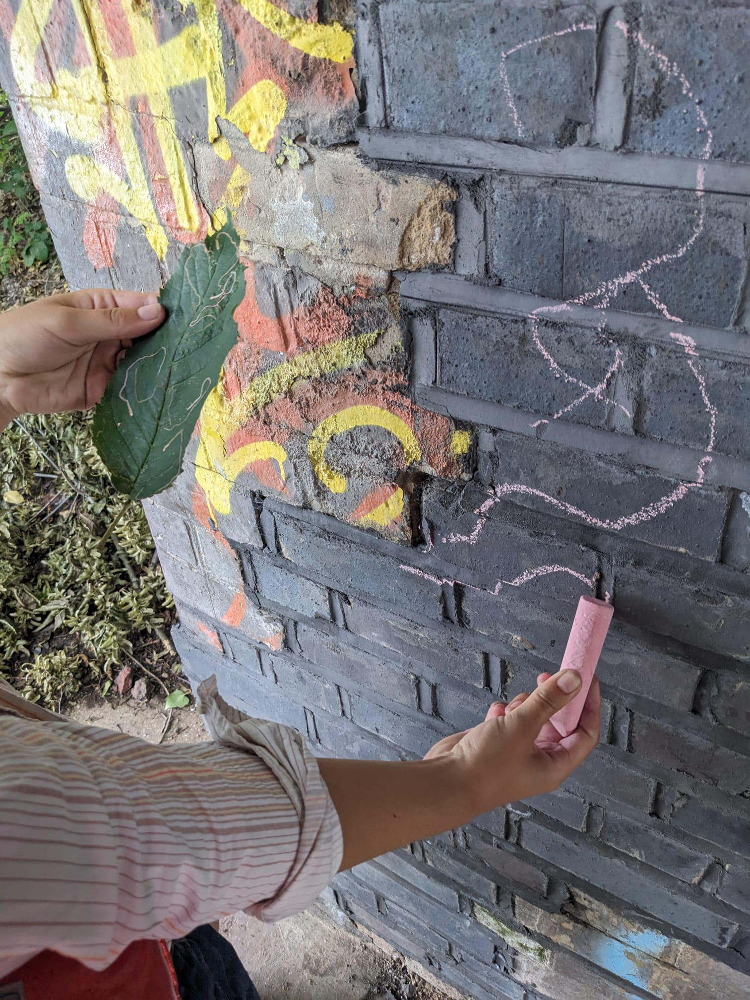
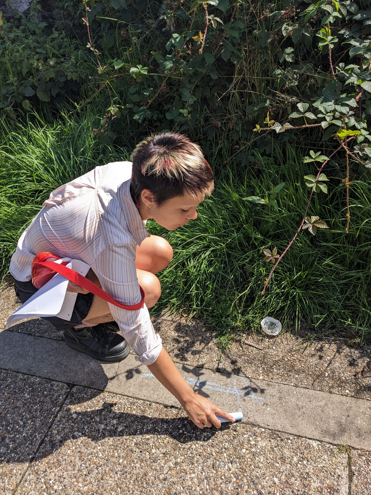
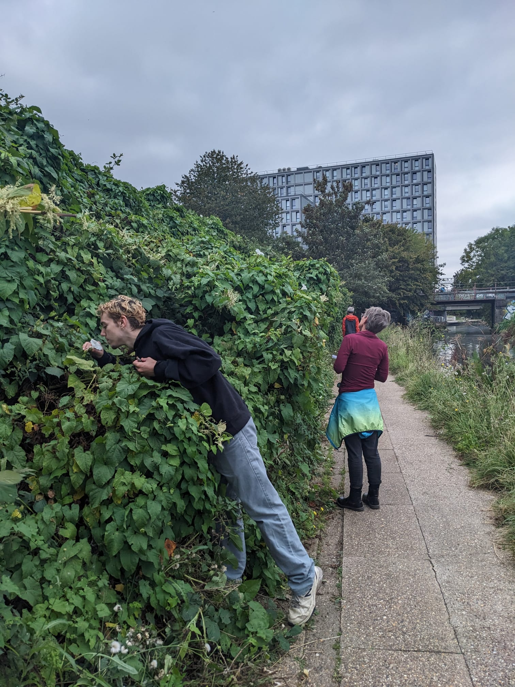

Sensory walks with Ethan Cohen for London Design Festival
I was invited by Ethan Cohen to join him in organising a series of sensory walks along the canal in West London. The walks origionally focused on sound and I joined to provide more focus on smell.
The walks provide a meditative space to focus on your body and the senses which are often overlooked. On the walks different prompts were provided and participants were encouraged to interact with the smells in the environment and create a scsent capsule of their journey along the canal.We also led a walk for Park Royal Design Festival in 2023.





